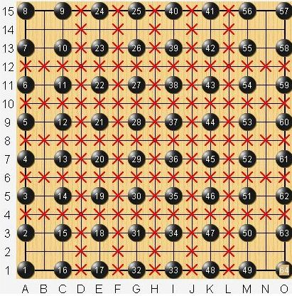
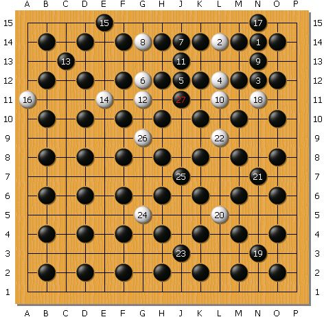
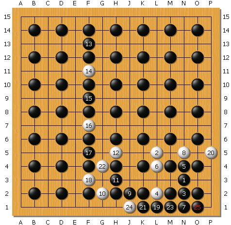
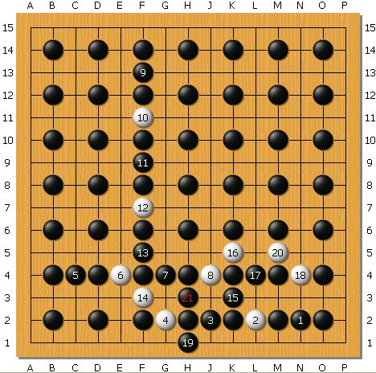

求满天星答案！！！
#1 求满天星答案！！！ 作者：牧羊犬 发表时间：2008-12-3 23:39:47

问黑先，如何胜？
原文出处：[五子棋]求满天星答案！！！
http://qbar.qq.com/u2006628/r/?2145
#2 Re:求满天星答案！！！ 作者：潇洒 发表时间：2008-12-4 9:44:40
看不见图片
#3 Re:求满天星答案！！！ 作者：Solmyr 发表时间：2008-12-4 17:33:38
 这个这个~这个是什么东东？！
这个这个~这个是什么东东？！
#4 Re:求满天星答案！！！ 作者：nara 发表时间：2008-12-4 17:42:27
楼主的图片是用什么打谱软件打的?怎么打的谱?
#5 Re:求满天星答案！！！ 作者：失落刀 发表时间：2008-12-4 18:45:24
1.在浙江教室可以这样打谱。
2.孤竹有这个题目的三种不同的答案。
发一种答案，赠送一个威望哈。
#6 Re:求满天星答案！！！ 作者：竹子 发表时间：2008-12-9 14:08:57
这个习题应该叫“俄罗斯方阵”，以前电视讲座上见到的。
发一种答案，赠送一个威望哈。（刀MM够小气的。。。，嘻嘻，要威望的话，可以去我的版面发帖啊~）
#7 Re:求满天星答案！！！ 作者：竹子 发表时间：2008-12-9 14:30:45
答案直接公布就没什么意思了，自己思考找到答案才是最有意思的。
这个问题难就难在存在很多禁手点，找到解禁的方法，就可以找出答案了，不是很难。
#8 Re:求满天星答案！！！ 作者：牧羊犬 发表时间：2008-12-20 18:29:29
唉！～
我做了好久好久了……
不是禁手就是被抢四！
有谁能好心发个答案看看嘛……
谢谢了！

#9 Re:求满天星答案！！！ 作者：牧羊犬 发表时间：2009-1-16 10:49:28
各位大侠，请问谁能给我一个可以打全黑的棋谱？
谢谢了！
#10 Re:求满天星答案！！！ 作者：笑笑笑笑 发表时间：2009-2-7 13:23:57
 这题目好强悍.
这题目好强悍.
#11 Re:Re:求满天星答案！！！ 作者：竹子 发表时间：2009-2-25 3:09:52

这个是最有趣的答案。
［ 失落刀 于 2009-2-25 8:14:32 时奖励此帖[金币加 20 威望加1］
#12 Re:Re:Re:求满天星答案！！！ 作者：竹子 发表时间：2009-2-25 3:12:12

这个是最简单的答案。
［ 失落刀 于 2009-2-25 8:14:47 时奖励此帖[金币加 20 威望加1］
#13 Re:Re:Re:Re:求满天星答案！！！ 作者：竹子 发表时间：2009-2-25 23:59:49
最后一个答案，斜线成五连胜的。

［ 失落刀 于 2009-3-3 12:15:24 时奖励此帖[金币加 20 威望加1］
#14 Re:求满天星答案！！！ 作者：就是爱玩 发表时间：2009-3-3 11:24:09
看得眼花缭乱。#15 Re:求满天星答案！！！ 作者：牧羊犬 发表时间：2009-10-13 22:02:36
太感谢了！~
答案也让人大饱眼福！~
还有，有可能，给我发难的人，出给我的题是错的。
因为“竹子”给的答案貌似题有点不同……
#16 Re:求满天星答案！！！ 作者：满天星 发表时间：2013-10-4 10:53:21
PASS